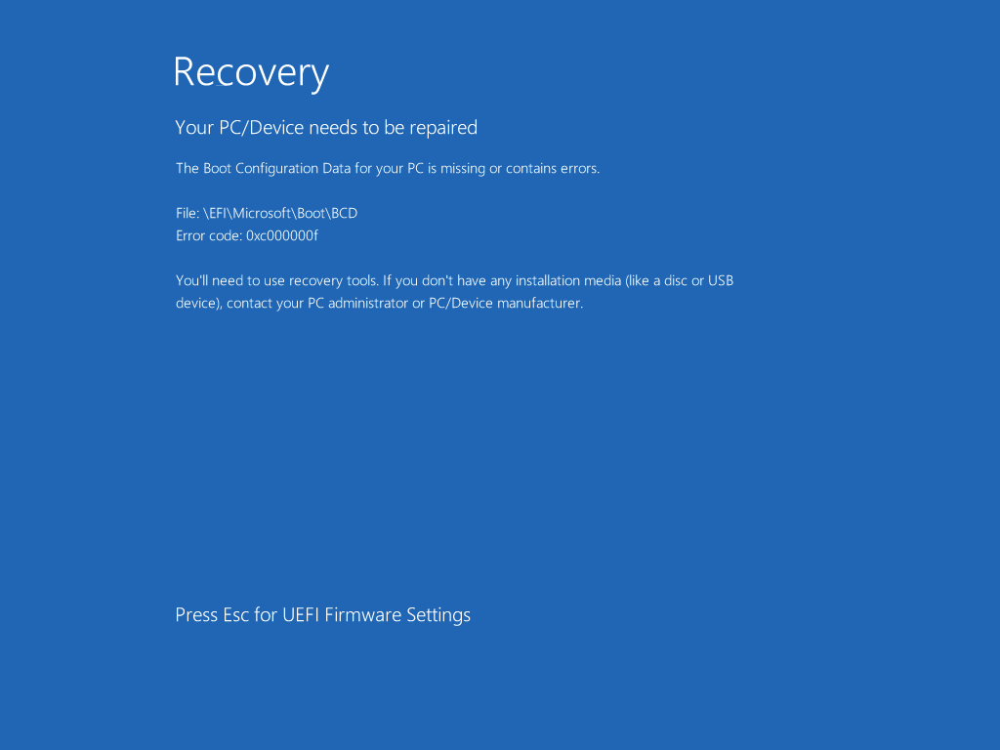
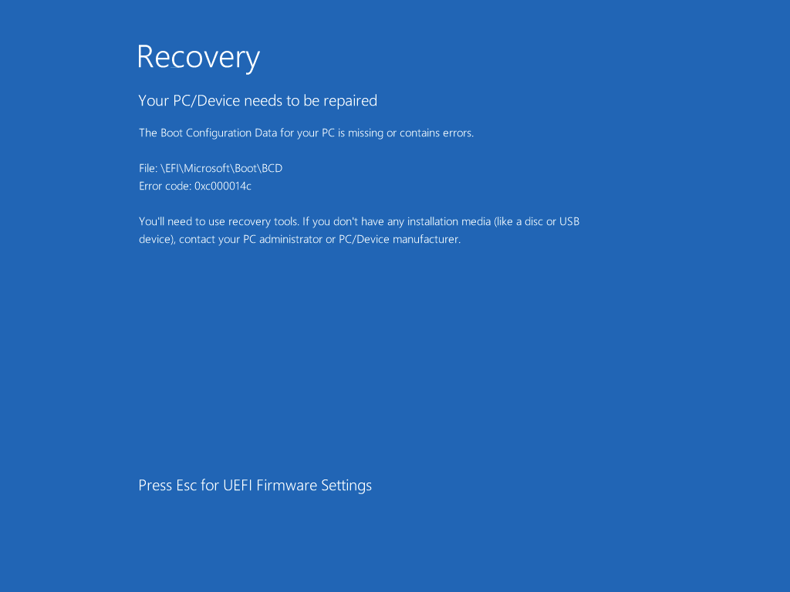
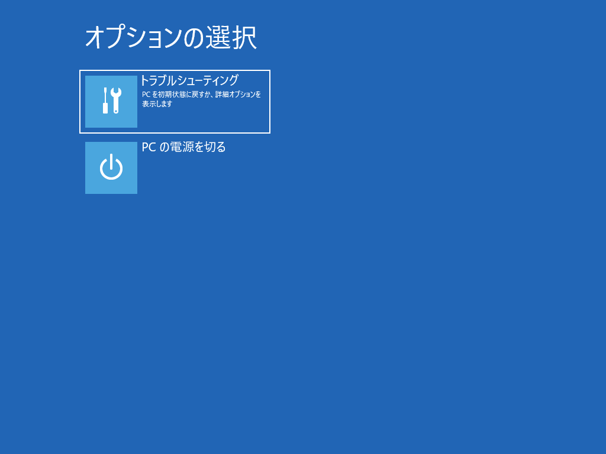

本記事はマイクロソフト社員によって公開されております。
こんにちは、Windows サポートチームの栗木です。
本記事では、EFI システム パーティションにある BCD (Boot Configuration Data) ファイルが消失または破損し、OS が起動できなくなった場合の対処方法についてご紹介いたします。
何らかの理由によってお使いの環境で OS が起動しなくなってしまった場合は、本記事の手順をもとに BCD ファイルを再構成することで復旧できるかどうか、お試しいただけますと幸いでございます。
適用対象の OS
- すべての Windows OS
BCD ファイルの概要
BCD ファイルは、ブート時に読み込まれるファームウェアに依存しないデータ ベース ファイルになります。Windows Boot Manager は、BCD ファイルを使い Windows OS の起動処理を進めていくため、このファイルが消失または破損している場合は、OS を起動することができなくなります。BCD ファイルは、EFI システム パーティションにあり、\EFI\Microsoft\Boot\BCD に配置されています。
OS 起動不可の症状
BCD ファイルが消失または破損し、起動ができない場合は、主に３種類の画面が表示されます。これらの画面が表示されたら BCD ファイルに消失または破損している可能性があります。
Case 1. File: \EFI\Microsoft\Boot\BCD, Error code: 0xc000000f

Case 2. File: \EFI\Microsoft\Boot\BCD, Error code: 0xc000014c

Case 3. 回復環境が起動（トラブルシューティングと PC の電源を切るだけが表示）

対処方法
BCD ファイルを再構成することで復旧が可能です。BCD ファイルの再構成は、Windows OS のインストール メディアでブートし、コマンド プロンプトから実行します。
Windows OS のインストール メディアがない場合は、Windows プレインストール環境 からコマンド プロンプトを起動できますので、次の手順で Windows PE (WinPE) メディアを作成してください
作業用の Windows 10/11 環境にて Windows ADK をインストール
Windows ADK のダウンロードとインストール
https://docs.microsoft.com/ja-jp/windows-hardware/get-started/adk-install以下の Web サイトを参考に WinPE のブートメディアを作成
起動可能な Windows PE メディアの作成
https://docs.microsoft.com/ja-jp/windows-hardware/manufacture/desktop/winpe-create-usb-bootable-drive
BCD ファイルの再構成手順
Step 1. コマンド プロンプトから diskpart ツールを起動
Windows OS のインストール メディアから起動した場合は、Shift+F10 キーを入力するとコマンド プロンプトを起動でき、Windows PE メディアから起動した場合は、自動的にコマンド プロンプトが起動します。コマンド プロンプトが起動したら、diskpart を実行してください。
Step 2. diskpart ツールでドライブレターを付与
まず、list disk コマンドでシステムに接続されているディスクを確認し、sel disk (ディスク番号) を実行し、EFI システム パーティションや OS がインストールされているディスクを選択します。
1 | DISKPART> list disk |
次に list part コマンドでシステム パーティションを確認し、sel part (パーティション番号) コマンドを実行し、システム パーティションを選択します。
1 | DISKPART> list part |
assign letter=s コマンドでシステム パーティションにドライブレターを割り当て、list vol コマンドを実行して、システム パーティションのドライブ レターに S が割り当てられていることと Windows OS がインストールされているボリュームのドライブレターを確認します。例では、C が割り当てられていますが、Windows OS がインストールされているドライブレターは、D など C 以外が割り当てられることがあるので必ずチェックしてください。
1 | DISKPART> assign letter=s |
exit コマンドで diskpart ツールを終了します。
1 | DISKPART> exit |
Step 3. BCD ファイルの再構成
コマンド プロンプトで bcdboot (Windows OS がインストールされているドライブレター):\Windows /s s: で BCD ファイルを作成します。
1 | X:\windows\system32>bcdboot c:\Windows /s s: |
これで作業は完了したので、wpeutil shutdown コマンドを実行してシステムをシャットダウンします。Windows OS のインストール メディアまたは Windows PE メディアを取り外し、起動できるか確認してください。
参考 URL
変更履歴
- 2022/04/18 : 本 Blog の公開